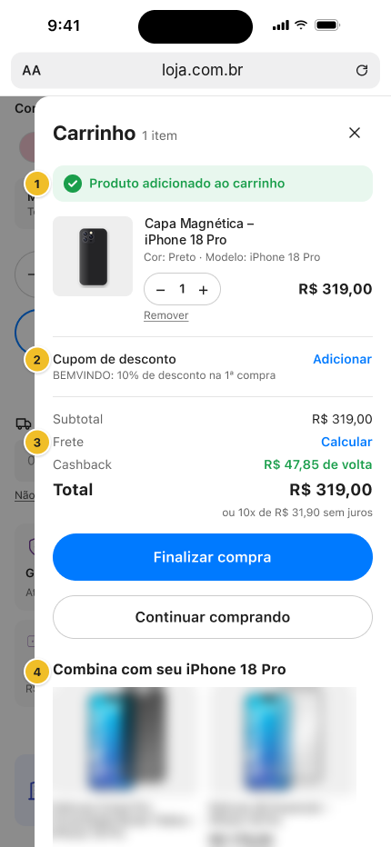
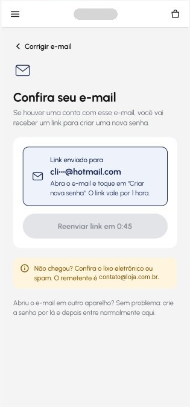
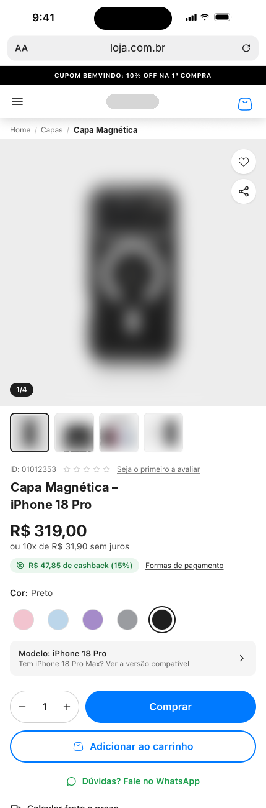
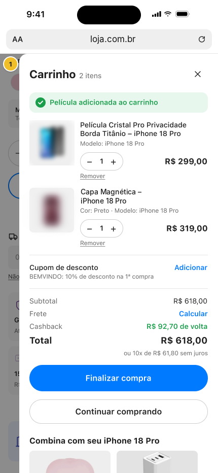
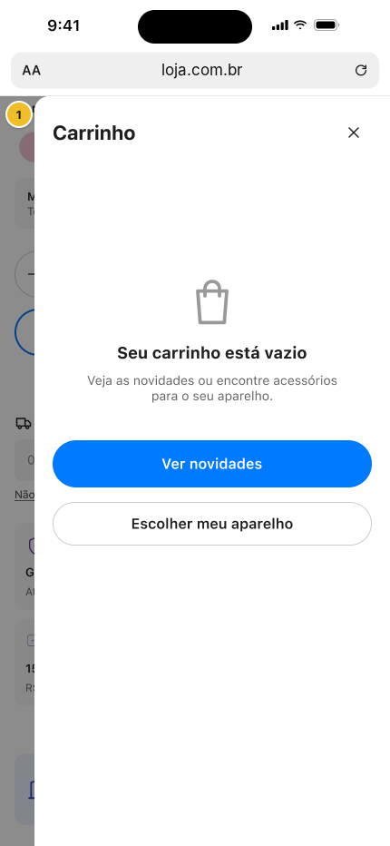
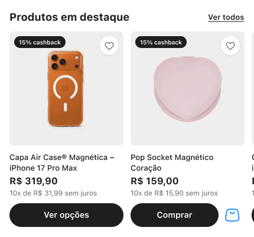
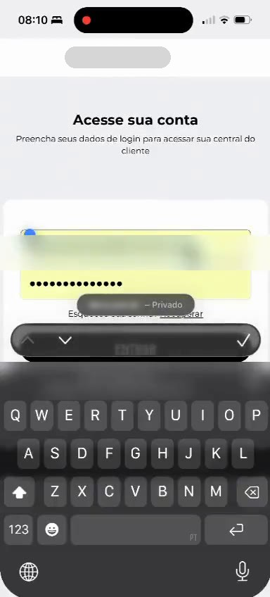
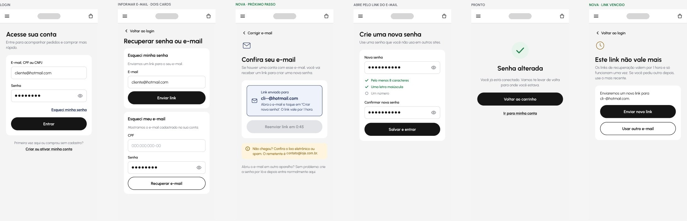
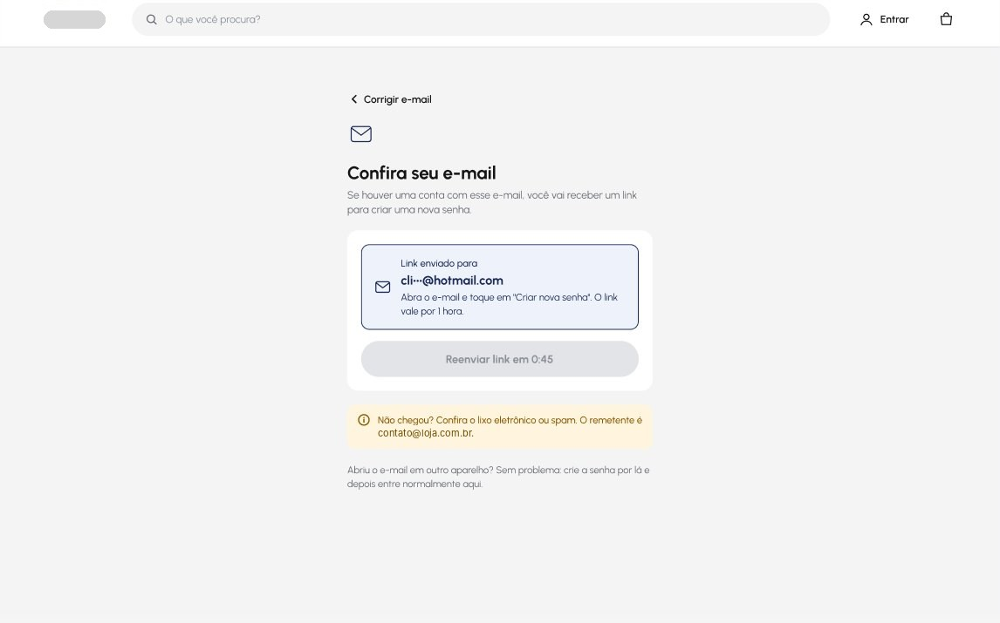

Como achei onde um e‑commerce perdia vendas no celular.
Projeto freelance para uma loja online de acessórios para celular, do diagnóstico com GA4 e Clarity a dois handoffs entregues ao time.


No celular, metade de quem colocava algo no carrinho não chegava a pagar.
O carrinho não aparecia depois de adicionar. E logo depois, quem já tinha conta travava no login.
Dois handoffs, um pra cada bloqueio.
Carrinho: separei "Comprar" de "Adicionar ao carrinho" e criei um carrinho lateral que mostra o que entrou, sem a pessoa sair da página.
Senha: desenhei uma recuperação que diz o próximo passo depois de pedir o link e leva a pessoa de volta à compra.
Antes de redesenhar, fui entender onde a compra travava
O pedido era aberto: achar os maiores problemas do site. O líder de e-commerce já tinha um palpite. Pra ele, as pessoas não achavam o botão do carrinho no topo da página.
Meus 10 anos com investimentos me ensinaram a entender um problema pelos dados antes de decidir o que fazer. Aqui, o ponto de partida foi o funil de compra. Usei quatro fontes, cada uma pra responder uma coisa.
Em que etapa as pessoas desistem?
Entre o carrinho e o pagamento, e bem mais no celular. Também mostrou que a medição tinha erros.
O que as pessoas tentam fazer e não conseguem?
Muitos toques em coisas que não respondem, e uma perda grande logo depois de "Finalizar compra", no login.
Como é comprar e entrar na conta, do começo ao fim?
Teste exploratório com 7 pessoas do time interno, todas no celular. 9 achados.
Quais princípios a página de produto quebra?
Nada mostra que o produto entrou no carrinho, e a mesma coisa aparece com nomes diferentes.
- 7 pessoas do time interno, de áreas, idades e intimidade com tecnologia diferentes.
- Tudo no celular, porque 87% dos usuários acessam o site por ele, segundo o GA4.
- Remoto, pelo Zoom, com gravação de tela e anotações de cada sessão.
- 10 a 18 minutos por pessoa, pensando em voz alta.
Por que o time e não clientes? Eu precisava de respostas rápidas, e o time estava ao meu alcance. Como essas pessoas já conhecem o site, se elas travaram, um cliente novo tende a travar nos mesmos pontos ou em mais.
- Comprar uma capa azul de iPhone 17 Pro Max
- Colocar também um carregador portátil no carrinho
- Ver o total do carrinho e seguir com a compra
- Entrar na conta ou criar uma nova
- Se não lembrasse a senha, recuperar
- Conferir os dados e finalizar a compra
Achou que "Comprar" ia direto pro pagamentoPor isso não juntava mais itens no carrinho.
Não achou o carrinho depois de adicionarFoi pro pagamento sem ver o total.
Não lembrava a senha e teve que recuperarO e-mail caiu no lixo eletrônico, e ir pro e-mail e voltar pro site confundia.
É um teste qualitativo, feito pra achar problemas. Por isso mostro quantas pessoas travaram, e não porcentagem.
O carrinho escondido era real. Mas o problema continuava depois dele.
Quando a pessoa conseguia seguir, ela travava de novo na hora de entrar na conta. Eram dois bloqueios, um atrás do outro.
No Clarity, 98 sessões tocaram em "Finalizar compra", mas só 63 chegaram no pagamento. O que tinha no meio era o login. Fonte: GA4 e Clarity
Quem passa pelo login converte mais que o dobro da média do site. 2,86% contra 1,32%.
CLARITY · 30 DIASde quem chega no login são usuários recorrentes, que já tinham visitado a loja antes.
CLARITY · 451 USUÁRIOSdas sessões no login tinham toques em algo que não respondia. No site todo, 3,2%.
CLARITY · 734 SESSÕESO evento de pagamento disparava 3,3 vezes por checkout. Sem corrigir isso, nenhum antes e depois seria confiável.
GA4 · AUDITORIAOu seja: o cliente mais decidido, muitas vezes recorrente, era quem mais travava. Isso mudou o foco do projeto.
Achei 16 problemas. Escolhi 2.
Tentar resolver tudo de uma vez era o jeito mais rápido de não aprovar nada. Então fiz três perguntas pra cada achado.
Quão grave é?
Escala de Nielsen, de 1 a 4. Impede a compra, atrapalha muito ou só incomoda.
Quem sofre com isso?
Um problema no caminho de quem já está comprando custa mais do que um problema na vitrine.
Dá pra mudar?
As telas de login são da plataforma de e-commerce, não da loja. Isso mudava o tipo de entrega.
Os dois focos foram o carrinho e a recuperação de senha, os dois com severidade 4. Garantia, ficha técnica, avaliações e lista de desejos ficaram anotados pra uma próxima rodada.
Fazer o carrinho aparecer na hora certa
Não era só o ícone. A página tinha dois botões "Comprar". O da página do produto até adicionava, mas o carrinho não abria e parecia que ia direto pro pagamento, então ninguém juntava mais itens. E o aviso de produto adicionado cobria a sacola.

"Comprar" vai pro pagamento. "Adicionar ao carrinho" abre o carrinho.
Aviso, resumo e "Finalizar compra" antes das recomendações.

Capa e película juntas, sem sair da página.

Em vez de uma tela em branco, dois caminhos pra continuar.

Produto com variação mostra "Ver opções". Sem variação, "Comprar" e a sacola.
Telas do Figma, no celular. A marca foi ocultada por confidencialidade.
Dois caminhos claros
"Comprar" continua sendo o botão principal. "Adicionar ao carrinho" fica logo abaixo, pra quem quer levar capa e película juntas.
Carrinho lateral, não outra página
Escolhi o carrinho lateral pra pessoa continuar na mesma página de produtos. Assim ela não precisa voltar e se localizar de novo a cada item que adiciona.
Sacola azul e contador
O mesmo símbolo no site todo, na cor de ação. O contador só aparece quando tem item.
Cada vitrine com a regra certa
Com cor ou modelo, "Ver opções". Sem variação, "Comprar" e a sacola. Assim ninguém leva a capa do celular errado.
- "Adicionar ao carrinho" e "Comprar" na página de produto
- Carrinho lateral com os estados de adicionado, dois itens, vazio e erro
- Sacola e contador no topo e nas vitrines
- Eventos do GA4 pra comparar antes e depois
- Selo de garantia por categoria
- Bloco de destaques na ficha do produto
- Cabeçalho novo no computador
Cheguei a desenhar esses itens. Tirei porque muita mudança junta dificulta a aprovação e não deixa saber o que mexeu na conversão.
Trazer de volta quem esqueceu a senha
As telas de login são da plataforma de e-commerce, e não da loja. Eu não podia só entregar telas novas. Precisava mostrar para outra empresa por que valia mudar o que é dela.

O que a gravação mostrou
Depois de enviar, nenhum próximo passo
Aparece um aviso verde e a pessoa continua na mesma tela, sem saber se espera, abre o e-mail ou tenta de novo.
O e-mail cai no lixo eletrônico
No Outlook, o e-mail de senha foi parar no lixo junto com os e-mails de ofertas.
"hotmail.vom" passa sem aviso
Um erro de digitação no domínio é aceito, e a pessoa fica esperando um e-mail que nunca vai chegar.
Numa gravação do Clarity, uma pessoa tentou entrar duas vezes, não conseguiu e criou um cadastro novo no meio do checkout. Aí a loja perde o histórico de quem já comprava.

Uma tela de próximo passo
O e-mail aparece mascarado pra conferir, com "Reenviar link" e contador, "Corrigir e-mail" e o lembrete de olhar o lixo eletrônico.
Link por e-mail, código como plano B
SMS e WhatsApp têm custo por envio. Preferi um plano principal sem custo extra, com o link que a plataforma já oferece.
Voltar pro carrinho
Depois de criar a senha nova, a pessoa já entra na conta e volta pra onde estava. É aqui que os dois handoffs se conectam.
Pedidos em forma de pergunta
Pra cada pedido, a plataforma responde se já dá pra configurar, se precisa de customização ou se não é possível.

Um handoff que dá pra entender sem reunião
Quem implementa não estava nas minhas conversas com o cliente. Então cada regra precisava estar escrita, e no lugar onde o desenvolvedor vai procurar.
O que mudou nesta tela
- 1"Adicionar ao carrinho" abaixo de "Comprar", com contorno azul. Abre o carrinho lateral.
- 2Barra fixa com preço, sacola e "Comprar". A sacola faz o mesmo que o botão 1.
- 3Sacola azul no topo, com contador que some quando o carrinho está vazio.
No Figma, cada tela ganhou um cartão amarelo ao lado, só com o que mudou, e bolinhas numeradas em cima dos elementos. As mesmas regras ficaram nas anotações do Dev Mode e num documento à parte.
No GA4, pedi um evento novo pra saber quando o carrinho abre, a origem de cada clique em comprar e a correção do evento de pagamento que contava em dobro.
Em delivery, com as métricas definidas
Os dois handoffs foram entregues em novembro de 2026 e estão em implementação pelo time de desenvolvimento. A medição acontece depois que as mudanças forem ao ar. A linha de base e os indicadores já ficaram definidos antes do lançamento.
O time recebeu a proposta muito bem. O que mais chamou atenção foi o dado de que quem passa pelo login converte o dobro.
| O que vou medir | Como | Linha de base |
|---|---|---|
| Do carrinho ao pagamento, no celular | Sessões que começam o checkout sobre sessões com produto no carrinho, 4 semanas antes e 4 depois | 49% |
| Abertura do carrinho | Quantas vezes abre sozinho e quantas pelo ícone | Não era medido |
| Recuperação de senha concluída | Senhas trocadas sobre recuperações pedidas | Pedido à plataforma |
| Cadastros duplicados | Contas novas com CPF que já existia | Pedido à plataforma |
Quando cada entrega completar 4 semanas no ar, atualizo este case com os números.
Como usei IA no projeto
Usei o Claude como ferramenta de produção. A IA executava; o problema, os critérios e cada decisão de design eram meus.
Cruzar os dados
Organizar as exportações do GA4 e do Clarity e cruzar com os achados do teste. A leitura do que importava e a priorização ficaram comigo.
Documentar o discovery
Um documento vivo com cada achado, sua evidência e sua severidade, que eu atualizava a cada nova fonte.
Montar e anotar o Figma
Versões mobile e desktop de cada tela, notas amarelas e anotações do Dev Mode, sempre com a minha revisão antes de seguir.
Escrever os handoffs
Regras, estados, critérios de aceite e eventos, a partir das decisões que eu tinha tomado com o cliente.
O que esse projeto me ensinou
Foi meu primeiro projeto com um cliente, trabalhando com os dados da loja e uma plataforma que eu não controlava.
Olhar os dados antes de desenhar
Comecei por um palpite sobre um ícone. Os dados mostraram o fluxo inteiro e um segundo ponto de atrito, no login.
Cortar escopo foi a parte difícil
Tirar a garantia e o cabeçalho doeu. Mas foi isso que deixou o handoff possível de aprovar e de medir.
Desenhar o que não é meu
Quando a tela é de outra empresa, a entrega vira conversa: evidência, pedido priorizado e perguntas claras.